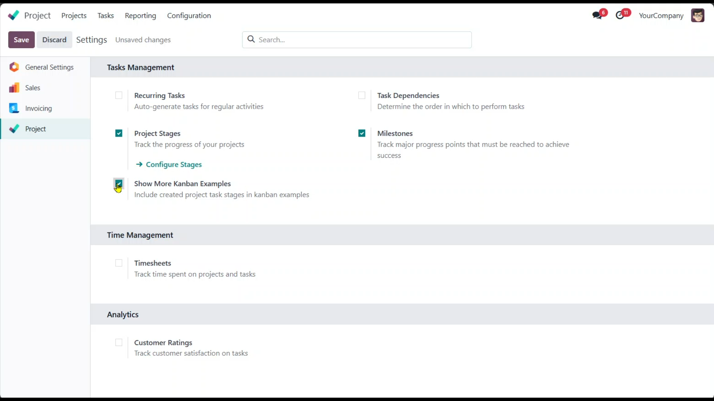
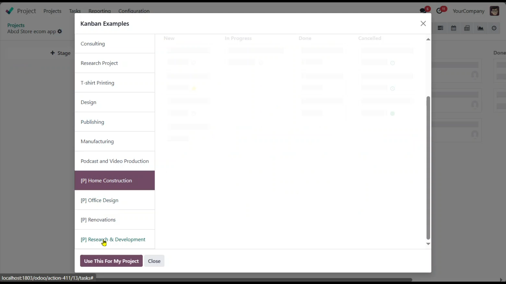

Looking for a skilled and reliable Odoo Developer to bring your business ideas to life? or to fix things? or to analyze unwanted results? or to do whatever in odoo
Let’s build something great together! I specialize in custom module development, ERP implementation, and performance tuning tailored to your needs.
It is designed to enhance project management in Odoo by providing users with the ability to create and utilize custom Kanban boards. This module allows users to design their own Kanban examples tailored to their specific project needs and seamlessly integrate them with existing Kanban boards from other projects.
You can allow user to use stages from created project by following settings
 